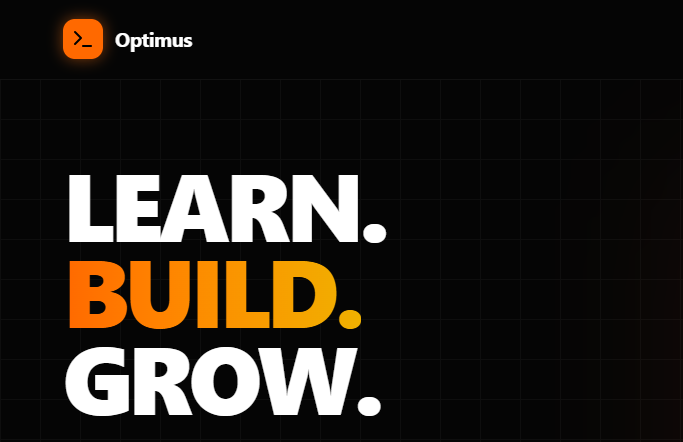

Building secure
backends & intelligent web platforms.
A motivated and detail-oriented student with a strong foundation in programming, software development, and problem-solving. Passionate about technology and eager to contribute effectively in a professional environment.
Technical Expertise
Programming
Python, HTML, CSS, JavaScript
Frameworks
Flask, Bootstrap
Databases
MySQL
Tools & Environments
VS Code, GitHub, Power BI
Selected Projects
🏆 1st Place Intercollegiate Tech Fest Winner
Experience & Education
Python Full Stack Intern
Contributed directly to a live web application project using Python Flask. Managed end-to-end SDLC cycles executing structural logic architecture, data management pipelines, dynamic testing modules, documentation writeups, and responsive UI integration.
Bachelor of Computer Application (BCA)
Affiliated with the University of Madras. Core specialization mastery covering: Advanced Python Development, Database Management Systems (DBMS), Operating Systems Engineering, and Next-Gen Web Technologies.